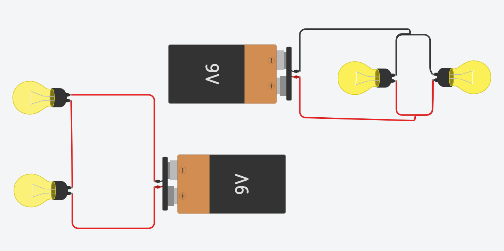

Table of Contents
Eletricidade e magnetismo

{kind=link}
Eletrostática
Carga elétrica
A Carga elétrica é a propriedade da matéria que gera força elétrica; assim como a massa é a propriedade da matéria que gera força gravitacional.
- Unidade de medida: Coulomb (\(C\))
- Carga elementar
- Menor unidade de carga
- \(e=1,6\times 10 ^{-19} \, C\)
- Constituíntes básicos da matéria (matéria ordinária)
| Partícula | Massa (kg) | Carga elétrica (C) | Múltiplos da carga elementar |
|---|---|---|---|
| Próton | \(1,7\times10^{-27}\) | \(1,6\times 10^{-19}\) | \(+e\) |
| Nêutron | \(1,7\times10^{-27}\) | 0 (neutra) | 0 (neutra) |
| elétron | \(9,1 \times 10^{-31}\) | \(- 1,6\times 10^{-19}\) | \(-e\) |
- Átomos
- Partículas básicas podem se agrupar formando átomos
- Cada átomo (caracterizado pelo número de prótons) é denomidado um elemento químico.
- Prótons e neutrons constituem o núcleo, elétrons se movimentam em órbitas bem definidas.
- Elétrons de valência (mas afastados do núcleo) são os responsáveis pela eletrização dos objetos macroscópicos, bem como pela condução de eletricidade.
- Moléculas
- Definição: Conjunto de átomos ligados químicamente
Condutores e isolantes
- Condutores
- Exemplos:
- Metais: estrutura cristalina de átomos, onde os eletrons de valência possuem certa mobilidade no meio.
- Soluções iônicas
- Água comum, pois possui sais minerais dissolvidos
- nesse caso os íons são responsáveis pela condução
- ex.: \( NaCl \rightarrow Na⁺ + Cl⁻ \)
- Água comum, pois possui sais minerais dissolvidos
- Exemplos:
- Isolantes
- Água pura (\(H_2O\)), vidro (\(SiO_2\)), borracha.
- Os elétrons estão localizados nas ligações covalentes, e por isso, não possuem mobilidade como nos metais.
- Água pura (\(H_2O\)), vidro (\(SiO_2\)), borracha.
- Supercondutores
- Semicondutores
Processos de eletrização
Eletrização por atrito
Quando atritamos dois corpos, há uma troca de elétrons, um corpo ganha e o outro perde. Assim, um corpo fica com uma carga elétrica negativa e, e o outro, positiva.
- Exemplos:
- Atrito entre caneta e cabelo (experimento realizado em sala)
- Correia e rolete isolante no Gerador de Van de Graff
- Eletrização por contato Quando um objeto eletrizado toca um objeto neutro, carregando-o.
Importante: quando um objeto condutor é eletrizado, a carga elétrica em exesso se equilibra de forma uniforme na sua superfície. por que?
Eletrização por indução
Nesse processo, um corpo nele é eletrizado sem que seja colocado em contato com um corpo eletrizado. Primeiro é induzido uma polarização das cargas no corpo neutro, que depois é aterrado, neutralizando um dos lados.
- exemplo: Eletroscópio
Força elétrica
A força elétrica é gerada pela carga elétrica. Assim, dois corpos eletrizados exercem, entre si, uma força, que pode ser de atração ou repulsão.
A carga elétrica é caracterizada por um sinal (positivo ou negativo) de modo que, cargas de mesmo sinal se repelem e cargas de sinais opóstos se atraem.
A intensidade da força é dada pela Lei de Coulomb:
A força é proporcional ao produto das cargas, e inversamente proporcional ao quadrado da distância entre os corpos.
Em equação:
\begin{equation} F = k\frac{q_1 q_2}{d^2} \end{equation}onde \(q_1\) e \(q_2\) são, respectivamente, as cargas dos corpos 1 e 2, \(d\) é a distância entre os corpos, e k é a constante de Coulomb
\begin{equation} k=9,0\times 10^{9} \, N\cdot m^2 \cdot C^{-2} \end{equation}Essa lei é análoga à Lei da Gravitação Universal de Newton .
Polarização
Campo elétrico
Potencial elétrico
O potencial elétrico (\(U\)) em um ponto é a energia potencial por carga que teria uma carga positiva naquele ponto. Assim, em termos matemáticos, ela pode ser atribuido como a energia por carga
\[ U = \frac{E}{Q}\]
A unidade de medida padrão para o potencial elétrico é o Volt (\( V\)) que significa Joule (\(J\)) por segundo. Em síbolos:
\[ V = \frac{J}{C}\]
Linhas de potencial em uma distribuição plana de carga elétrica.

Fonte: Paulagf27, CC BY-SA 4.0, via Wikimedia Commons


{kind=link}
O potencial elétrico está relacionado à tensão elétrica e à diferênça de potencial elétrica, todas essas grandezas medidas em volts. Apesar de serem grandezas relativamente diferentes, para fins didáticos, aqui iremos considerá-las sinônimos.
Eletrodinâmica
Corrente elétrica
Definição de corrente elétrica
É o fluxo orientado de carga elétrica em um condutor, e pode ser calculado imaginando a quantidade de carga que atravessa uma área de seção transversal do condutor por unidade de tempo.
\[I = \frac{ Q}{ t}\]
O sentido convencional da corrente é aquele que teria cargas positivas se movendo, mesmo sendo, em geral, as cargas negativas (elétrons) que se movem.
A unidade de medida padrão para a corrente é o Ampère, que significa Couloumbs por segundo. Em símbolos
\[A = \frac{C}{s}\]
Representação de uma corrente elétrica com cargas positivas ou negativas se movendo..

Fonte: And1mu, CC BY-SA 4.0, via Wikimedia Commons


{kind=link}
Noções sobre corrente alternada
Na corrente contínua (cc) , o fluxo está sepre em um sentido. Por exemplo, uma lâmpada ligada a uma pila. As polaridades da pilha (fixas) determinam o sentido da corrente.
Por outro lado, na corente alternada (ca) os polos positivos e negativos se alternão periodicamente. Como exemplo, uma lâmpada ligada a uma tomada, com alternações entre 50 e 60 Hz.
Corrente, tensão e potência (Ampère, Volt e Watt)
| unidade | símbolo | "definição" | grandeza | símbolo | "definição" |
|---|---|---|---|---|---|
| Joule | \(J\) | \(J = N\cdot m\) | Energia | \(E\) | \(E=F\cdot d\) |
| Coulomb | \(C\) | \(6,25\times10^{18}e\) | Carga Elétrica | \(Q\) | \(Q=\pm\,n\,e\) |
| Watt | \(W\) | \(W= J / s\) | Potência | \(P\) | \(P=E/t\) |
| Hertz | \(Hz\) | Oscilações / s | Frequência | \(f\) | \( f=n/t \) |
| Volt | \(V\) | V = J/C | Tensão elétrica | \(U\) | \(U = E/Q\) |
| Ampère | \(A\) | A = C/s | Corrente elétrica | \(I\) | \(I = Q/t\) |
A potência, energia por carga, pode ser relacionada à corrente e à tensão em um circuito, ou dispositvo eletrônico, por :
\[ P = U\cdot I\]
Demonstração: \( U \cdot I = \frac{E}{Q}\frac{Q}{t} = \frac{E}{t} = P \)
Associações de compoonentes eletrônicos
Ligações em Série e Paralelo de uma bateria e duas lâmpadas.
Fonte: imagem criada pelo autor no tinkercad.com
Em série
- Mesma corrente
- Tensão se divide
Em paralelo
- Mesma tensão
- Corrente se divide
Resistores
Lei de Ohm
- resistores ôhmico
- resistores não ôhmicos
Aplicações
- transformar energia elétrica em energia térmica
- reduzir a tensão elétrica em partes de um circuito.